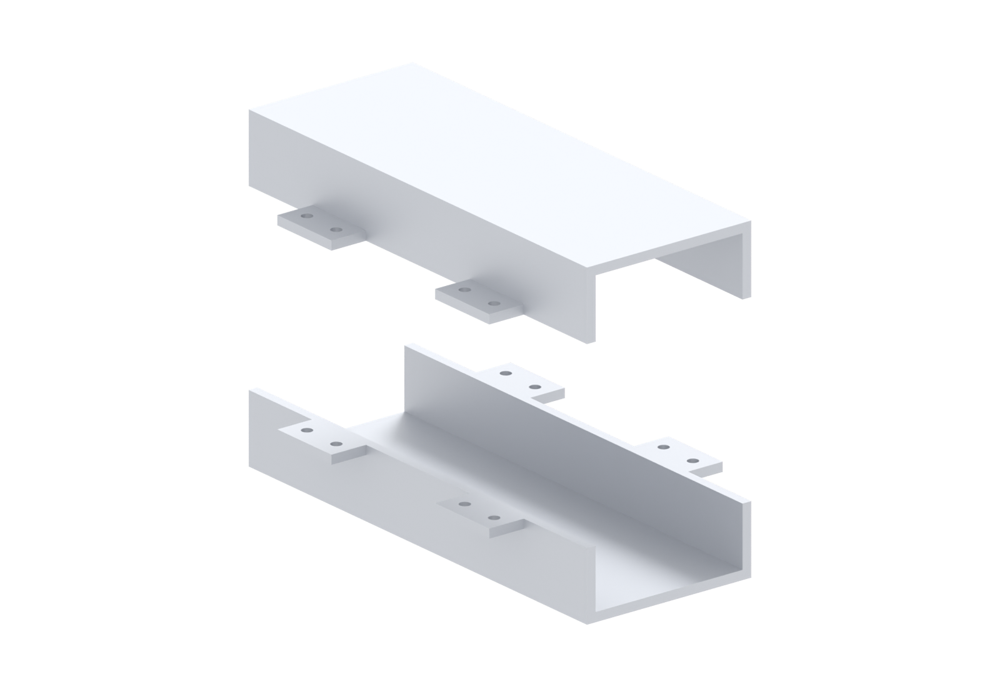
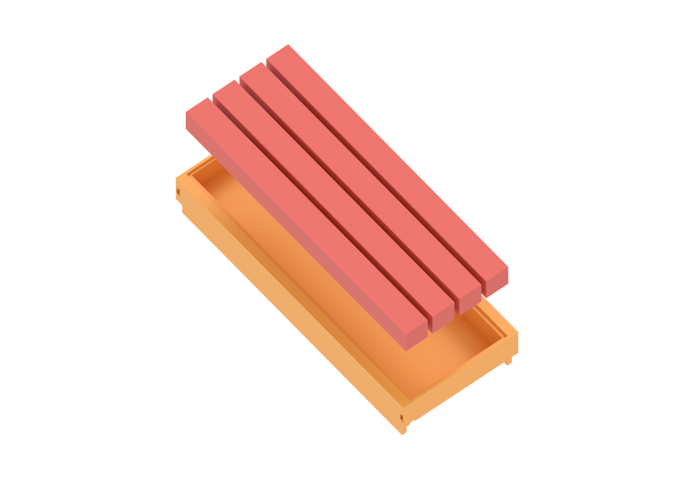
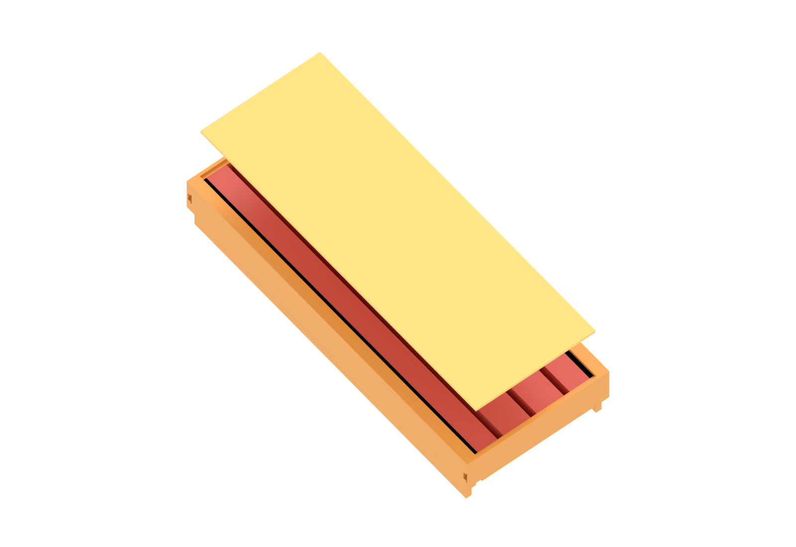
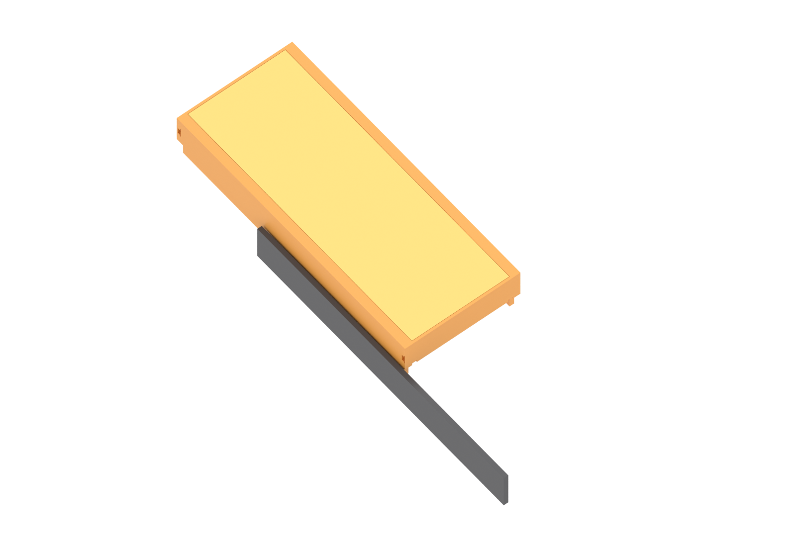
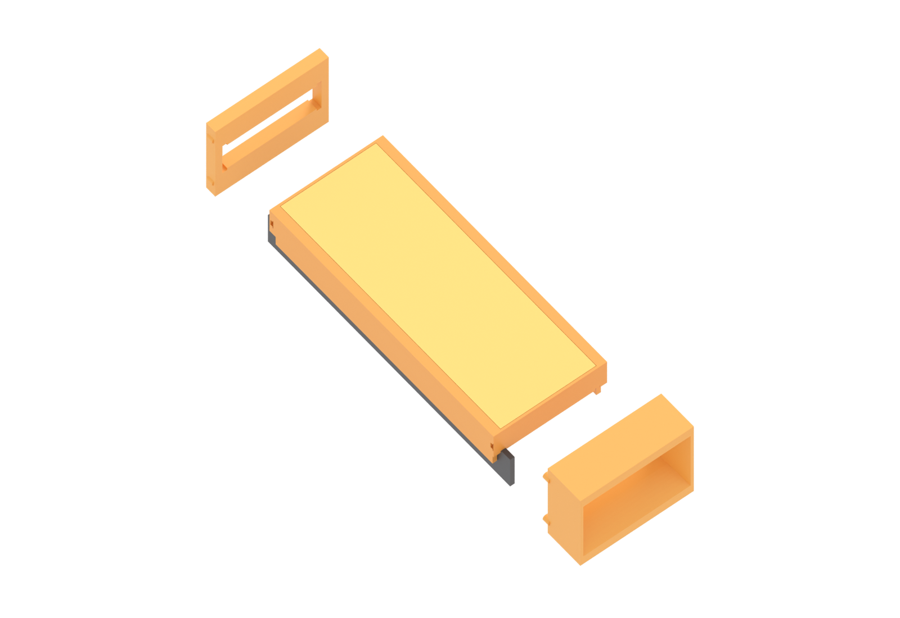
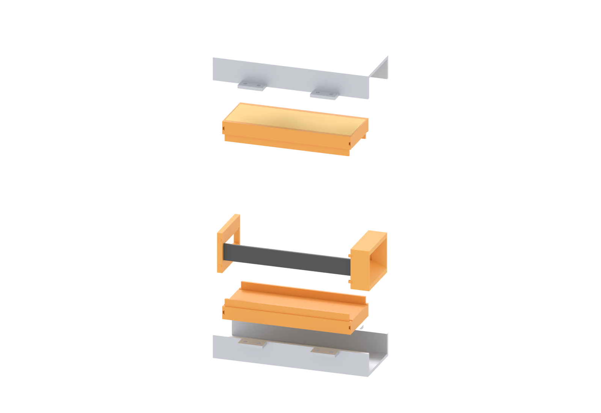
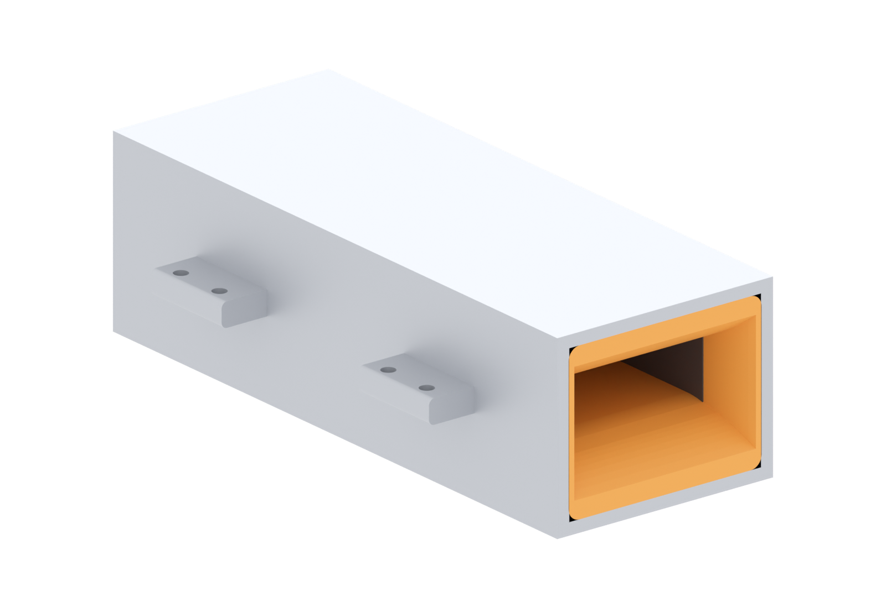

Fold 90° down at ±28.5 on an R3 die for the walls, then the two lugs out at ±44.06 on R1.5. One blank per half, mirror image.

48 tiles per tray: 6 along the bore, 4 across the width, 2 layers deep. They drop into the cavity and finish flush with the floor.

Drop the 1 mm cap on the ledge. It sits on the magnets and finishes flush with the steel inner face.

Each graphite plate slides into the 1 mm groove from the end. Push until it sits 5 mm inside the end pocket.

Two Ø3 pegs each, into the blind holes in the tray end faces. Mouth in, straight end out.

Lower tray into the bottom yoke, upper into the top. Bring the halves together so the lug faces meet bare — no paint, no gasket.

Eight M3 × 14 through the lugs — two per lug, 13 mm apart. Tighten in a cross pattern, a little at a time, so the halves seat flat instead of rocking.

| If it does not fit | Nominal | Cause |
|---|---|---|
| tray rattles sideways | 0.15 / side | shim 0.3–0.5 mm closed-cell foam on the outer wall only |
| cap stands proud of the steel | 1.0 | epoxy puddle under the cap, or a magnet sitting proud |
| electrode will not enter | 2.0 in 2.2 | graphite burr, or the groove has epoxy in it |
| halves will not close | 0 gap | tray rim not seated on the plate — check the stack, not the bolts |